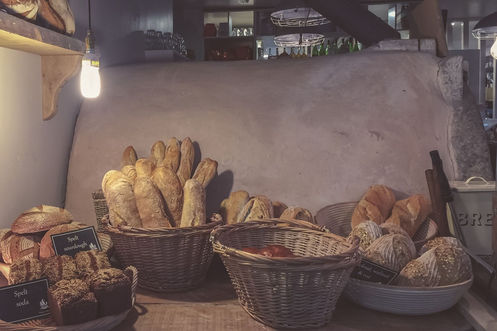

Печём хлеб на живой закваске, круассаны и пирожки, собираем торты на заказ. Открыты каждый день с 8:00 до 20:00 на Садовой, 12, а курьер привозит заказы по городу с 9:00 до 21:00.
Если изделие оказалось некачественным, напишите нам в день покупки и пришлите фото: вернём деньги или заменим. Состав и аллергены указаны на этикетке каждого изделия, а за час до закрытия, с 19:00 до 20:00, хлеб и выпечка на 20 % дешевле.